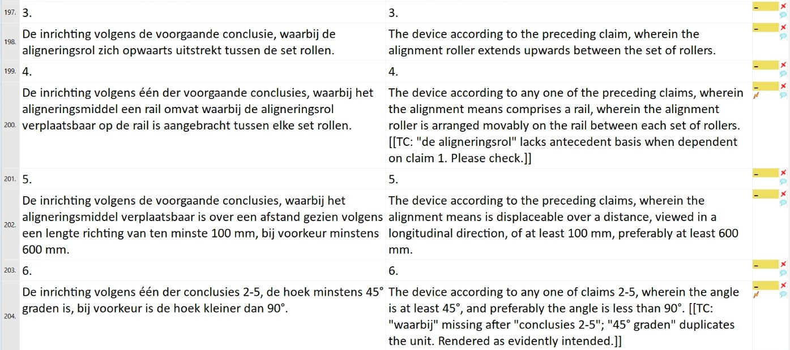
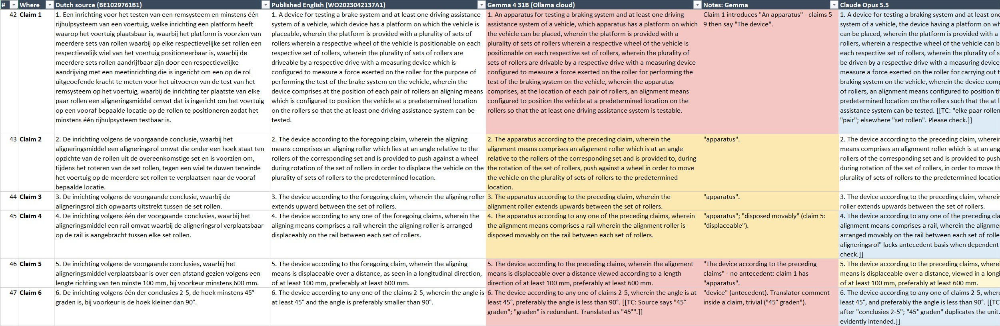

Can a local AI model translate a patent?
Translators keep asking whether they can run AI translation on their own computer, so that a client's document never leaves it. I tested that on a published Dutch patent: a model you can run at home, Gemma 4 31B, against Claude Opus 5.5, with the official English publication as the yardstick.
The short answer
- Gemma 4 31B writes fluent, mostly accurate patent English, but its terminology drifts. The claimed device was an "apparatus" in claims 1 to 4 and a "device" in claims 5 to 9, and two different parts ended up with the same name. A local model of this size gives you a first draft that needs a thorough post-edit.
- Claude Opus 5.5 stayed consistent from the first paragraph to the last claim, and it pointed out several problems in the Dutch original, including a missing antecedent in claim 4.
- House rules make a real difference. I wrote six Dutch patent conventions the local model had been getting wrong into Supervertaler's SuperMemory, the notes it sends to the model with every request, and the model applied all six on the next run.
The test
The document is Belgian patent BE1029761B1, Inrichting voor het testen van een remsysteem: a roller brake tester that also lines a car up so its driver assistance systems can be tested. About 4,300 words of description and 12 claims, mechanical and electrical engineering.
The applicant also filed it as an international (PCT) application, in Dutch. Dutch is not a PCT publication language, so WIPO published it in English translation as WO2023042137A1. That makes it an ideal test: a real filing translation of exactly this text, and both versions public. Because everything was already published, it was safe to send it to cloud services as well as local ones.
I translated it twice in memoQ, with the same settings both times:
- Supervertaler for memoQ 0.1.19, Pre-translate, an empty translation memory and no termbase;
- the default translation prompt, plus my house rules in SuperMemory (more on that below);
- Gemma 4 31B through Ollama's cloud service (
gemma4:31b-cloud), the same model you can download and run locally; - Claude Opus 5.5 through Anthropic's API.
Then I compared both, paragraph by paragraph and claim by claim, with the published English: meaning, terminology, claim language and fluency.
Results
| Gemma 4 31B | Claude Opus 5.5 | |
|---|---|---|
| Rows with a claim-critical problem | 7 | 0 |
| Rows with a meaning or consistency problem | 15 | 1 |
| Name of the claimed subject | "apparatus" in claims 1–4, "device" in claims 5–9 | "device" throughout |
| stuurinrichting in claim 9 | "control device", the name claim 7 already uses for another part | "steering device" |
| Spelling | British and American mixed | British throughout |
| Problems in the Dutch source pointed out | none of substance | several, including a missing antecedent in claim 4 |
A row is one paragraph or one claim; 53 in all. The published English, a careful and quite literal filing translation, is the yardstick and is not scored.
Where the local model went wrong
Almost never in meaning, and almost always in consistency. During Pre-translate, memoQ hands Supervertaler about ten segments at a time (the Segments per batch setting can make that smaller, but memoQ never sends more), and each batch is a separate request. The model gets the same instructions every time, but it does not see what it wrote in the batches before. In ordinary prose, a change of wording between batches is a style problem. In a patent it breaks the claims, which depend on every element keeping one name.
The same inrichting, in claim 1 and claim 5
1. An apparatus for testing a braking system…
5. The device according to the preceding claims…
1. A device for testing a braking system…
5. The device according to the preceding claims…
Claim 9: …een afstandsmeetinrichting en een stuurinrichting… (claim 7 has already introduced a regelinrichting, a control device)
…a distance measuring device and a control device…
…a distance-measuring device and a steering device…
…heeft geen of nagenoeg geen invloed op het testen van het remsysteem.
…has little or virtually no influence on the testing of the braking system.
…has no or virtually no influence on the testing of the braking system.
The other drift was smaller but constant: "rolls" and "rollers", "status" in the description and "state" in the claims, "tyre" and "tire" in one paragraph. It also called a voorbeelduitvoeringsvorm (an exemplary embodiment) a "preferred embodiment", which says something different.
So why did Claude stay consistent?
It worked under exactly the same conditions: the same batches of ten, the same instructions, and no memory of earlier batches either. It stayed consistent because it made the same choice every time. Given inrichting in a patent, it chose "device" in all 22 batches. Gemma's preference between "apparatus" and "device" was weak enough to tip one way in one batch and the other way in the next. A stronger model is a more predictable one, and in a patent, predictability is most of what consistency is.
You do not have to rely on that, though. A termbase entry for each key term tells every batch which word to use, whichever model is translating.
What the cloud model added
Opus kept its terminology where it matters most, in the claims. Its slips were small: one "brake system" among the "braking systems", "movable" and "displaceable" for the same Dutch word, and one paragraph of the description that called the steering device a control device. More interesting are its translator comments, which Supervertaler lets the model leave in square brackets for you to deal with in review. Several pointed at real problems in the Dutch original: a figure "3B" that should be 2B, an alignment roller numbered 130 that is 150 everywhere else, and this, on claim 4:

That is right: claim 4 may depend on claim 1, which never introduces an alignment roller. It is the kind of remark a patent attorney is glad to receive from a translator.
House rules make the difference
Before this test I ran a smaller one, on a short demonstration patent translated from English into Dutch. In two runs, Gemma got six standard Dutch patent conventions wrong.
Supervertaler has a feature for exactly this: SuperMemory. You keep memory banks, folders of plain-text notes with your terminology decisions and style rules, one per client, plus a shared bank for house rules that apply to every job. Supervertaler sends the relevant notes to the model with every request, so the model starts each segment knowing what you have already decided. I added the six conventions to my shared bank, one line each in its terminology table, for example:
| characterised in that (claims) | met het kenmerk, dat | Never the calque "gekenmerkt in dat", and never "dadurch", which is German. |
On the next run, the model applied all six:
| English | Before | After the house rules |
|---|---|---|
| characterised in that | gekenmerkt dadurch dat | met het kenmerk, dat |
| to provide (a device) | te voorzien | te verschaffen |
| preferred embodiment | voorkeursvorm | voorkeursuitvoeringsvorm |
| to this end | hiervoor | daartoe |
| flicker | knipperen | flikkeren |
| light-dependent resistor | lichtgevoelige weerstand | lichtafhankelijke weerstand |
"Gekenmerkt dadurch dat" is worth a second look: dadurch is German, from the German claim formula. The model knew Dutch; it did not know Dutch patent drafting.
So the gap between a local model and a top cloud model is partly knowledge you can supply yourself: a termbase for each job's key terms, and SuperMemory for your conventions. That is also exactly what would have prevented most of the inconsistencies above. The help explains how memory banks work in Supervertaler for memoQ and in Supervertaler for Trados.
What this means if you want to work locally
- Size matters more than anything. I also tried 7 and 8 billion parameter models: they produced invented words and grammar errors, and are not usable for patent work.
- You need a graphics card. A model of about 30 billion parameters needs around 24 GB of graphics memory to run at a usable speed. On a fast desktop PC without one, a smaller Gemma model took 15 minutes to read Supervertaler's instructions before the first segment, and several minutes for each one after.
- Give it your terminology. A termbase for the job's key terms and SuperMemory for your conventions fix most of what goes wrong.
- Plan on a full post-edit, with particular care for the claims.
Cloud, but confidential
If your concern is confidentiality rather than strictly never leaving your computer, look at which terms your AI use falls under. With Claude, that depends on how you use it:
- Anthropic's API, which is what Supervertaler uses when you give it an API key, and the Team and Enterprise plans fall under Anthropic's Commercial Terms. Your documents are not used to train models, and API data is deleted within 30 days.
- The personal Free, Pro and Max plans fall under the Consumer Terms. Whether your chats are used to train future models is a setting, and with it switched on they can be kept for up to five years.
The difference matters if you translate through Claude Desktop with Supervertaler's MCP connector: then the plan you are signed in with decides which terms apply. Translating through the API with your own key is always under the Commercial Terms.
For my own translation work I use Anthropic's API and a Claude Team plan, both under the Commercial Terms, so client documents are not used to train anyone's models. My clients can read how I handle their documents on my confidentiality page. Whatever you use, check what your clients' agreements actually require.
Whichever you choose, test a model on a published patent before trusting it with client work, as I did here. Supervertaler's help explains how to set up a local model: Local and cloud models.
Check it yourself
If you use Supervertaler for Trados, SuperBench runs this kind of test for you, on your own document: three models of your choice translate the same segments with your prompt, termbases and SuperMemory, a fourth model judges them blind, and you get the translations side by side with a report and the cost of each. Nothing is written to the document.
For this test, the full comparison is here:

Sources: BE1029761B1 (Dutch) and WO2023042137A1 (English).
Caveats
- One document and one run per model: a case study, not a benchmark.
- Gemma ran on Ollama's cloud service. The version you download to run at home is compressed to fit, and is likely to do slightly worse.
- Both models will have moved on by the time you read this. The method will not have: use a published document, compare against the published translation, and read the claims first.